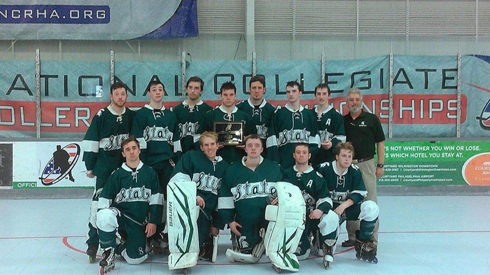
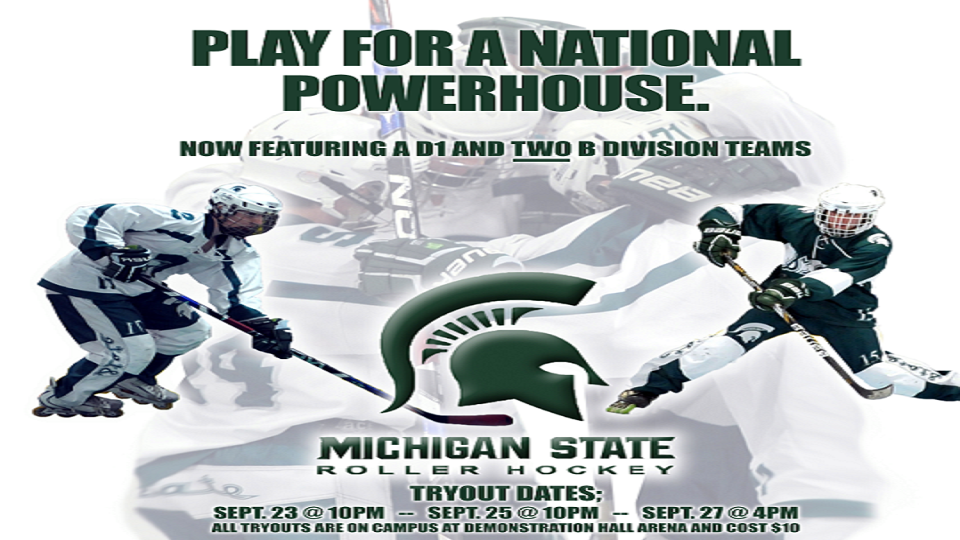

Ryan Werner
Welcome to my portfolio. View my past projects and accomplishments below.
- 
- 

I am from Harrison Township, which is a big boating town located on Lake St. Clair.
I am currently a senior at Michigan State University, double-majoring in Accounting and Media & Information. I am also an assistant captain on the MSU Roller Hockey Team, who were national runners-up in 2014. In addition to hockey, I enjoy designing, editing videos, writing, playing video games, watching movies, and running.
If you have any questions please contact me:
Ryan Werner
145 Collingwood Drive Apartment 25
East Lansing, Michigan 48824
(586) 295-7505
wernerry@msu.edu